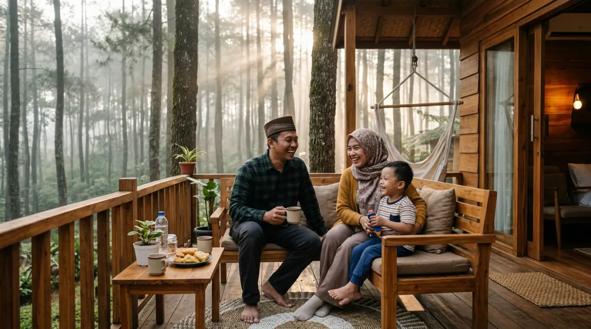

Arena glamping menawarkan kenyamanan hotel dengan keindahan alam terbuka — liburan keluarga yang sempurna.
Arena glamping menawarkan kenyamanan hotel dengan keindahan alam terbuka — liburan keluarga yang sempurna.Pernah nggak sih kamu merasa waktu berjalan terlalu cepat? Tahu-tahu anak sudah makin besar, sementara kamu masih saja terjebak dengan tumpukan deadline dan meeting marathon setiap harinya.
Rutinitas kerja dari Senin sampai Jumat, atau bahkan akhir pekan yang terpotong urusan kantor, sering bikin kita lupa kapan terakhir kali benar-benar tertawa bebas bareng keluarga. Jangan sampai kamu menyesal karena melewatkan momen emas mereka hanya demi membalas email klien di hari Minggu, yang padahal bisa ditunggu sampai Senin.
Mengambil jeda sejenak bukan berarti kamu lari dari tanggung jawab, kok. Justru ini saatnya kamu menebus waktu yang hilang tersebut. Salah satu cara paling pas buat quality time tanpa perlu ribet adalah dengan mengunjungi arena glamping.
Kamu dan keluarga bisa menyatu dengan alam bebas, menghirup udara segar, tapi tetap tidur nyenyak di atas kasur empuk. Lewat panduan ini, aku akan membantumu menemukan destinasi liburan yang nyaman, praktis, dan pastinya bikin kenangan yang nggak akan terlupakan.
Mengapa Arena Glamping Jadi Solusi Liburan Kaum Urban?
Bekerja di kota besar dengan segala kemacetan dan polusinya memang sukses bikin kita gampang burnout. Wajar kalau pas weekend atau cuti tahunan, otak kita langsung request untuk melihat yang hijau-hijau. Masalahnya, ide untuk camping atau berkemah secara tradisional seringkali layu sebelum berkembang.
Selamat Tinggal Drama Bongkar Pasang Tenda
Menyiapkan peralatan kemah tradisional itu kadang sama capeknya kayak nyiapin materi pitching buat klien besar. Kamu harus ngecek tenda, bawa sleeping bag, matras, kompor portable, sampai urusan logistik makanan yang nggak ada habisnya. Belum lagi kalau sampai di lokasi harus bongkar pasang tenda di bawah terik matahari.
Di sinilah arena glamping (glamorous camping) hadir sebagai pahlawan buat kaum urban. Kamu cukup datang bawa baju ganti dan skincare, sisanya sudah disiapkan. Nggak ada lagi drama punggung encok gara-gara tidur beralaskan matras tipis, atau emosi meledak karena pasak tenda hilang satu. Semuanya sudah ready to use, persis kayak kamu masuk ke kamar hotel, tapi dengan bonus pemandangan hutan atau danau di depan pintu.
Fasilitas Lengkap: Kenyamanan Hotel di Tengah Hutan
Dulu, menginap di alam terbuka berarti kamu harus bersiap untuk berkompromi dengan kenyamanan. Sekarang? Berbagai arena glamping di Indonesia sudah berlomba-lomba memberikan pelayanan kelas wahid.
Mulai dari kasur sekelas hotel bintang lima, koneksi Wi-Fi (kalau-kalau kamu terpaksa harus approve dokumen urgent dari HP), sampai colokan listrik yang memadai buat nge-charge seluruh gadget keluarga. Liburan di alam jadi tetap relevan dengan gaya hidup modern kita yang nggak bisa lepas dari kenyamanan.
Kriteria Arena Glamping yang Ramah Anak dan Lansia
Berdasarkan pengalamanku mengamati berbagai spot liburan, nggak semua tempat yang melabeli dirinya sebagai glamping itu cocok buat keluarga, lho. Apalagi kalau kamu membawa balita atau orang tua. Memilih arena glamping yang tepat itu ibarat menyeleksi kandidat karyawan baru; harus teliti screening-nya biar nggak menyesal di belakang. Berikut kriteria wajib yang harus kamu cek:
Kasur Empuk dan Suhu Ruangan Terkontrol
Tidur nyenyak adalah kunci dari liburan yang sukses. Pastikan arena glamping yang kamu pilih menyediakan kasur sungguhan yang tebal dan empuk, bukan sekadar kasur busa tipis yang ditaruh di lantai. Selain itu, perhatikan juga ventilasi dan pengatur suhu.
Kalau lokasinya di pegunungan yang sangat dingin, cari yang punya fasilitas penghangat ruangan atau minimal selimut ekstra tebal. Kalau di daerah yang agak rendah, pastikan ada AC atau kipas angin supaya anak-anak nggak rewel karena kegerahan.
Kamar Mandi Dalam dan Air Hangat Itu Wajib
Ini dealbreaker paling besar! Bayangkan kamu harus mengantar anak balitamu pipis jam 2 pagi, menembus udara dingin, gelap, hanya untuk ke toilet umum yang jaraknya 50 meter dari tenda. Rasanya pasti lebih horor daripada di-ping bos jam 11 malam.
Arena glamping yang proper untuk keluarga wajib memiliki kamar mandi en-suite (di dalam tenda atau kabin) lengkap dengan water heater. Udara pegunungan itu dinginnya menusuk tulang, jadi air hangat adalah kebutuhan mutlak, bukan sekadar kemewahan.

Momen tawa bersama keluarga di alam terbuka adalah kenangan yang tak ternilai harganya.Daftar Rekomendasi Arena Glamping Terbaik di Indonesia
Setelah menyeleksi puluhan tempat dan mempertimbangkan faktor keamanan, kenyamanan, serta keindahan alamnya, aku sudah merangkum beberapa arena glamping terbaik yang sangat layak masuk ke itinerary liburan keluargamu.
1. Bobocabin Cikole, Bandung: Sensasi Kabin Pintar di Hutan Pinus
Kalau kamu terbiasa dengan sistem smart office di kantor, kamu bakal langsung jatuh cinta dengan Bobocabin Cikole. Mengusung konsep kabin modular yang hi-tech, tempat ini menawarkan smart window yang bisa diatur tingkat keburamannya hanya dengan satu sentuhan di layar tablet.
Terletak di tengah hutan pinus Cikole yang rimbun dan sejuk, arena glamping ini sangat ramah keluarga. Area camp-nya rata, jadi aman buat anak-anak lari-larian. Kalau malam tiba, kamu bisa menyewa alat barbeque atau membuat api unggun untuk sekadar membakar marshmallow bersama si kecil. Fasilitas kamar mandi dalamnya sangat bersih, lengkap dengan air hangat yang stabil.
2. Kintamani Eco Glamping, Bali: Udara Sejuk dengan View Gunung Batur
Siapa bilang Bali cuma soal pantai? Cobalah melipir sedikit ke daerah Kintamani. Arena glamping di sini menawarkan sesuatu yang magis: pemandangan langsung ke arah Gunung Batur dan Danau Batur tepat dari depan tendamu.
Tenda-tenda di sini dirancang dengan gaya safari yang mewah. Saat bangun pagi, kamu cukup membuka ritsleting tenda, dan lanskap pegunungan yang diselimuti kabut tipis langsung menyapa. Ini adalah tempat yang sangat pas untuk kabur sejenak dari rutinitas. Bayangkan menyeruput kopi hangat di teras tenda, jauh dari suara klakson kendaraan, sementara anak-anak aman bermain di rumput yang luas.
3. Glamping Lakeside Rancabali, Ciwidey: Kemah Mewah di Tepi Danau
Mencari suasana yang tenang dengan view air? Glamping Lakeside Rancabali di Ciwidey adalah jawabannya. Berada tepat di pinggir Danau Situ Patenggang dan dikelilingi hamparan kebun teh yang hijau sejauh mata memandang, tempat ini menawarkan tenda-tenda berbentuk menyerupai keong raksasa (tent resort).
Setiap tenda dirancang dengan balkon kayu yang menghadap langsung ke danau. Ini tipe arena glamping yang bikin kamu lupa dengan tumpukan file Excel di kantor. Fasilitasnya super lengkap, bahkan restoran di kawasan ini (Pinisi Resto) punya bentuk seperti kapal pesiar yang nyentrik banget dan pasti disukai anak-anak. Udara di sini sangat dingin saat malam, tapi tenang saja, kasur dan water heater-nya berfungsi dengan sangat prima.
4. The Highland Park Resort, Bogor: Nuansa Camp ala Suku Indian
Kalau kamu mencari arena glamping yang jaraknya nggak terlalu jauh dari Jakarta, The Highland Park Resort di kaki Gunung Salak, Bogor, adalah opsi yang brilian. Konsep yang diusung sangat unik, yakni tenda-tenda berbentuk kerucut khas suku Indian (Apache) dan tenda khas Mongolia.
Tempat ini bukan sekadar arena glamping biasa, melainkan resort lengkap. Ada kolam renang dengan seluncuran, mini zoo, area berkuda, sampai lapangan mini golf. Bisa dibilang ini adalah "one-stop solution" buat keluarga yang nggak mau repot pindah-pindah tempat rekreasi. Anak-anak dijamin nggak akan kehabisan aktivitas, dan kamu bisa sedikit bersantai tanpa harus pusing memikirkan itinerary harian.
5. Maribaya Glamping Tent, Lembang: Relaksasi Pemandian Air Panas
Satu lagi permata dari daerah Lembang, Bandung. Maribaya Glamping Tent tidak hanya menawarkan kemah mewah, tetapi juga akses langsung ke pemandian air panas alami. Setelah seharian beraktivitas, berendam di kolam air panas adalah cara paling instan untuk melepas stres dan otot-otot yang kaku akibat terlalu lama duduk di kursi ergonomis kantormu.
Tenda-tendanya sangat luas, beberapa bahkan dilengkapi dengan living room kecil di dalamnya. Desain interiornya hangat dan homey, membuat keluarga merasa seperti berada di rumah sendiri, namun dengan upgrade pemandangan alam yang spektakuler.
Tips Mempersiapkan Liburan Glamping Bareng Keluarga
Meski judulnya "glamorous", kamu tetap akan menghabiskan banyak waktu di alam terbuka. Biar liburanmu nggak berujung pada drama, ada beberapa hal kecil yang wajib kamu perhatikan:
- Pesan Jauh-Jauh Hari: Sama kayak booking tiket pesawat promo, arena glamping yang bagus itu cepat banget penuh, apalagi saat long weekend. Pesanlah sebulan atau dua bulan sebelumnya.
- Siapkan Pakaian Berlapis (Layering): Cuaca di gunung itu moody, kadang lebih moody dari bos kamu. Siang bisa sangat terik, tapi malamnya suhu bisa anjlok. Bawa jaket tebal, kaus kaki, dan topi kupluk.
- Bawa Obat-obatan Pribadi dan P3K: Meski fasilitasnya sekelas hotel, lokasinya biasanya jauh dari apotek. Obat flu, antangin, plester, dan obat nyamuk (lotion atau patch) itu wajib ada di dalam tas.
- Sedia Camilan Favorit: Alam bebas seringkali bikin perut cepat lapar. Bawa snack favorit anak-anak supaya mereka nggak rewel di tengah malam saat restoran atau kantin arena glamping sudah tutup.
Kesimpulan: Saatnya Ciptakan Kenangan Sebelum Terlambat
Pada akhirnya, pekerjaan memang penting, target perusahaan juga harus dicapai. Tapi, tumpukan pekerjaan itu nggak akan pernah ada habisnya. Percayalah, lima atau sepuluh tahun dari sekarang, kamu mungkin nggak akan ingat meeting apa yang kamu hadiri di hari Jumat sore itu.
Tapi, anak-anakmu pasti akan selalu mengingat momen ketika kalian duduk di depan tenda arena glamping, tertawa bersama di bawah taburan bintang, dan memanggang marshmallow dengan wajah cemong.
Jangan tunggu sampai mereka terlalu sibuk dengan dunia remajanya, atau sampai punggungmu terlalu kaku untuk diajak berjalan-jalan di alam. Waktu adalah satu-satunya hal yang nggak bisa kamu beli ulang.
Ambil cutimu, kemasi barang secukupnya, dan berikan keluargamu pengalaman liburan di arena glamping yang nyaman, tenang, dan merekatkan kembali kehangatan keluarga. Selamat merencanakan liburan, ya!
FAQ